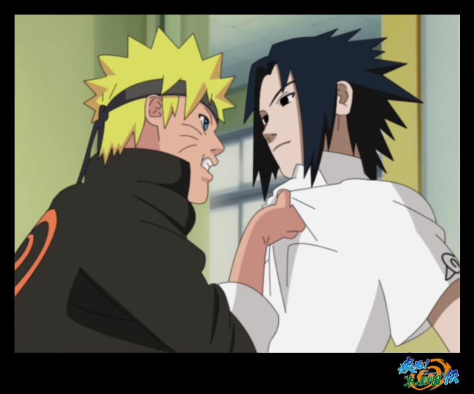

| Noticias | Spoilers | Naruto | Dragon Ball Z |

Naruto:
Naruto (NARUTO —ナルト—? romanizado NARUTO) es una serie de manga escrita e ilustrada por Masashi Kishimoto y cuyas adaptaciones al anime son dirigidas por Hayato Date. La obra narra la historia de un ninja adolescente hiperactivo, impredecible y ruidoso llamado Naruto Uzumaki, quien aspira a convertirse afanosamente en Hokage —el máximo grado ninja—, con el propósito de ser reconocido como alguien importante dentro de su aldea.
La serie está basada en una one-shot que Kishimoto realizó en agosto de 1997 para la revista Akamaru Jump.2 A partir de noviembre de 1999, Naruto es publicado por la editorial Shūeisha en la revista semanal japonesa Shōnen Jump,3 siendo recopilado desde entonces en cincuenta y siete volúmenes. El éxito del manga hizo que su trama fuera adaptada en un anime producido por los Pierrot y distribuido por Aniplex, el cual fue transmitido por la cadena televisiva TV Tokyo el 3 de octubre de 2002. La primera temporada duró 220 episodios, y poco después se creó una secuela, Naruto: Shippūden, cuya emisión inició el 15 de febrero de 2007. Además, Pierrot ha producido ocho películas basadas en la serie, tanto de la primera como la segunda temporada, así como ha producido varias animaciones originales. Otras piezas de merchandising incluyen un conjunto de novelas ligeras, artbooks , videojuegos y cromos de colección desarrollados por distintas empresas.
Tanto el manga como el anime han alcanzado una distribución notable en el extranjero, siendo publicado en más de veintitrés países y transmitido en más de sesenta.4 5 6 Las versiones en español son publicadas por la editorial Ediciones Glénat en España,7 Larp Editores en Argentina,8 y Grupo Editorial Vid en México y el resto de Hispanoamérica.9 Mientras que la publicación en inglés es realizada por VIZ Media, donde se ha convertido en una de las publicaciones más exitosas de la compañía. El retraso que conllevan la traducción y adaptación ha fomentado su distribución por Internet (mediante scanlation y fansub) al poco tiempo de aparecer en Japón,10 con lo que la obra resulta difundida mucho antes de que sea traducida oficialmente en otros países.
Hasta el volumen 46, Naruto ha vendido más de 90 millones de copias, siendo el quinto manga más vendido de la historia.11 Igualmente, la adaptación inglesa tuvo su aparición en la lista de los mejores libros de todos los tiempos del periódico USA Today (en 2006, el volumen 11 ganó los Premios Quill).12 Naruto fue también el tercer manga más vendido en 2007 de Shūeisha, siendo superado únicamente por One Piece y Nana,13 mientras que en 2008 fue el segundo manga más vendido en Japón, sólo superado por One Piece.14 En el ranking de los mejores 100 animes de 2006 de TV Asahi (según una encuesta japonesa online), Naruto alcanzó el decimoséptimo puesto.
Argumento
Naruto Uzumaki es un ninja adolescente que tiene encerrado en su interior al «Zorro Demonio de Nueve Colas» Kyūbi (9テイルス悪魔フォックス?).16 Doce años antes del inicio de la serie, este demonio atacó a la Aldea Oculta de la Hoja,17 matando a muchas personas.16 Como consecuencia, el líder de la aldea (el Cuarto Hokage, Minato Namikaze) sacrificó su vida utilizando el Shiki Fūjin para sellarlo dentro de Naruto cuando era un recién nacido, con lo que esperaba detener la masacre. Por ello, Naruto fue víctima de maltratos por quienes lo consideraban como el propio Kyūbi.16 A manera de solución, el Tercer Hokage (quien tuvo que reasumir el mando luego del sacrificio del Cuarto Hokage) publicó un decreto donde prohibía a cualquiera la mención sobre el ataque del Kyūbi, y quien lo hiciera sería severamente castigado.16 Doce años más tarde, Naruto se gradúa de la Academia Ninja usando su técnica clones de sombra (影分身の術 Kage Bunshin no Jutsu?), proveniente del pergamino prohibido de la aldea, el cual había robado tras ser engañado por el ninja renegado Mizuki, con el supuesto fin de salvar a su maestro Iruka Umino. Este encuentro le permitió a Naruto percatarse de que él era el recipiente contenedor del Kyūbi, y que había alguien que lo estimaba y lo reconocía moralmente como una persona.16
Ilustración del Shan Hai Jing (texto chino de la época pre-Dinastía Qing) donde aparece el «Zorro Demonio de Nueve Colas», criatura de la mitología china sobre la cual está basada Naruto.
|  |
Mientras ellos aprenden nuevas habilidades y conocen a nueva gente y escenarios durante sus misiones, Naruto lucha por su sueño de volverse el máximo líder de su aldea (Hokage) y ser reconocido como alguien importante.16 Al inicio, la serie se enfoca en los integrantes del Equipo, Naruto, Sasuke y Sakura.18 19 Poco después, Orochimaru (uno de los delincuentes más buscados)20 ataca a la Aldea Oculta de la Hoja, asesinando al Tercer Hokage como acto de venganza personal.21 Lo anterior desencadena que Jiraiya, uno de los tres legendarios ninja (伝説の三忍 Densetsu no Sannin?), inicie la búsqueda de su antigua compañera de equipo, Tsunade,23 para designarla como la Quinta Hokage. Durante la búsqueda se revela que Orochimaru quiere encontrar a Sasuke (a quien conoce por sus técnicas de línea sucesoria y oculares),24 con tal de proponerle el poder que tanto anhela para matar a su hermano Itachi Uchiha,25 responsable de haber asesinado a todo su clan.26 27 Sasuke acepta la proposición y se va a entrenar con él, traicionando a su aldea. Mientras tanto, Naruto decide hacer algo al respecto, por lo que decide dejar la aldea junto a Jiraiya durante dos años y medio con tal de entrenar y prepararse para la próxima vez que se encuentre con Sasuke, a quien intentará salvar.30
Hakke no Fūin Shiki, sello mediante el cual el Kyūbi fue sellado dentro de Naruto.
Al concluir el período de entrenamiento, Naruto regresa a la aldea justo cuando una misteriosa organización denominada Akatsuki intenta capturar a las nueve poderosas bestias bijūs con cola luyendo al «Zorro Demonio de Nueve Colas» que permanece sellado dentro de él,16 con la finalidad de crear una técnica jutsu que les permita controlar al mercado de guerras ninjas.32 El Equipo 7 y varios ninjas de la aldea luchan contra los miembros de Akatsuki,33 34 sumándose también a la misión que busca rescatar a su antiguo compañero Sasuke.35 36 37 Sin embargo, éste traiciona a Orochimaru38 y enfrenta a Itachi a manera de venganza. Aunque Itachi muere, Sasuke escucha una revelación de parte del miembro de Akatsuki, Madara Uchiha,41 donde explica que Itachi tuvo la orden de eliminar a su clan de parte de los altos mandos de la aldea.17 42 Entristecido por esto, Sasuke ingresa a las fuerzas de Akatsuki con el objetivo de destruir a la aldea. En tanto, varios miembros de Akatsuki van capturando a los diferentes contenedores de bijūs y jinchūrikis,33 mientras que dos de sus integrantes, Pain y Konan, invaden y destruyen la aldea en búsqueda de Naruto.34 45 Sin embargo, Naruto vence a Pain y lo convence de dejar Akatsuki.46 A continuación, Pain utiliza sus últimas fuerzas para revivir a los habitantes de la Aldea de la Hoja.47 Inmediatamente después del ataque de Pain, el Raikage hace un llamado a las demás aldeas para discutir acerca de Sasuke, el cual atacó a la Aldea Oculta de las Nubes;48 esto incita a Naruto a dirigirse hacia el País del Metal, y negociar el castigo de Sasuke.49 Tras esto, Madara llega a la reunión de las Cinco Grandes Naciones, explicando que su intención es obtener el poder de todos los bijūs y utilizarlos en su plan «Ojo de Luna», que consiste en crear una ilusión a nivel global, lo suficientemente poderosa como para controlar a la humanidad, a través de la Luna.50 Ante ello, todos los líderes de las cinco villas ninja, rehusándose a apoyarlo, se unen para confrontarlo; por ello, ocultan a los últimos dos jinchūrikis dentro de una isla secreta en el País del Rayo.51 Ahí, Naruto conoce a Killer Bee, un shinobi que contiene el «Hachibi (八尾?)», dentro de él, y Naruto le pide ayuda para que lo entrene y pueda controlar de forma correcta el chakra del «Zorro Demonio de Nueve Colas».
Kakashi Gaiden y producciones originales del anime
En el manga, la separación entre Naruto y Naruto: Shippūden es una serie de cinco capítulos llamada Kakashi Gaiden (un gaiden es una historia de trasfondo) que relata los sucesos ocurridos a uno de los personajes durante su juventud.53 En abril de 2009, se publicó una guía llamada Naruto Chronicle mini book, en la cual se confirma la pronta adaptación al anime de esta parte del manga,54 ocurrida por fin en un especial televisivo de una hora el 30 de julio del mismo año.
En el anime, dado que la historia avanzaba más deprisa que el manga, se lanzó una serie de relleno para dar tiempo a que se revelara lo que estaba por acontecer en el manga. Este relleno se prolongó durante un número de capítulos similar a los ocupados por la primera parte, del orden de. La continua prolongación de esta etapa retrasó la adaptación animada de la segunda parte del manga, lo cual provocó que se anunciara el final del anime, aspecto de importancia para los que siguen la historia dentro y fuera de Japón.
Aspectos de la serie
Artículos principales: Geografía de Naruto y Ninja (Naruto)
Diagrama de misiones.
Naruto tiene un gran número de personajes que, en su mayoría, se distinguen por ser ninjas. Al principio estudian en la Academia Ninja, para luego ser divididos en tríos Genin (grupo de ninjas novatos), a los cuales se les es asignado un sensei experimentado.18 Estos núcleos se convierten sucesivamente en las bases para la interacción entre los personajes, donde los equipos son elegidos para las misiones de acuerdo a su desempeño y a sus capacidades complementarias. El «Equipo 7» se convierte poco a poco en el marco social donde Naruto empieza a convivir, para ir familiarizándose con sus compañeros Sasuke y Sakura, al igual que con su sensei Kakashi, con quienes integra el eje principal del argumento.57 Los otros equipos son formados por sus antiguos compañeros de clase, con los que Naruto se conecta por medio de varios aspectos, aprendiendo de sus vulnerabilidades y aspiraciones, aspectos que a menudo relaciona con su propia vida. No obstante, no sólo aparecen tríos de ninjas, sino que existen algunas excepciones de conjuntos formados por múltiplos de tres.
Jerarquía de los tipos de chakra.
En el mundo de Naruto, los países operan como entidades políticas separadas, gobernadas por señores feudales. Dentro de estos países están las aldeas ocultas (隠れ里 kakurezato?) (asentamientos de viviendas ninjas). Una aldea oculta mantiene la economía del país mediante la formación de jóvenes ninja desde temprana edad, utilizándolos para realizar misiones en otros países y cobrar por ellas. El ninja de una aldea oculta también sirve como fuerza militar para el país de origen. Cabe mencionar que los líderes de las aldeas ocultas están en igual posición que los líderes de sus países respectivos. En la trama, existen hasta cinco países diferentes: el País del Viento, el País del Fuego, el País del Relámpago, el País del Agua y el País del Rayo (conocidos íntegramente como las «Cinco Grandes Naciones Shinobi»). Estos países son los más poderosos en el mundo de Naruto, siendo gobernados por un señor feudal, mientras que los líderes de las aldeas ocultas en dichos países ostentan el título de Kage. Se han nombrado otras naciones aparentemente más pequeñas en el manga o el anime, pero sus datos aún no han sido del todo revelados.
Personajes:
Artículo principal: Personajes de Naruto
La influencia de los guerreros ninja resultó indispensable para crear a los distintos personajes que aparecen en la serie; sin embargo, sus habilidades varían puesto que su adiestramiento es a base de un conjunto de disciplinas de combate, además de interactuar con su energía interna (chakra). En la ilustración, un Shuriken utilizado simbólicamente como arma por los ninjas.
La gran mayoría de los personajes introducidos en la serie son ninjas provenientes de las distintas aldeas y facciones que aparecen en la historia. Los protagonistas pertenecen a la Aldea Oculta de la Hoja17 y la historia, si bien no gira en torno a ellos, es narrada mayormente con base en sus aventuras.
El personaje principal que da nombre a la serie es Naruto Uzumaki (うずまきナルト Uzumaki Naruto?), un joven ninja que alberga en su interior al demonio Kyūbi y que desea convertirse en Hokage de su aldea para demostrar a todos su verdadero poder, al igual que su valentía.16 Sus compañeros de grupo (al inicio de la historia) son Sasuke, Sakura y Kakashi, éste último su maestro.18 Con el avance del relato, dicho grupo cambia a partir de que Sasuke decide abandonar la aldea para llevar a cabo su venganza personal.28 Poco después, Naruto se convierte en aprendiz de Jiraiya.
Sasuke Uchiha (うちはサスケ Uchiha Sasuke?) es miembro del clan Uchiha. Es un chico serio, aunque posee gran habilidad para las artes ninja.18 Su objetivo es hacerse lo suficientemente fuerte como para derrotar a su hermano mayor Itachi,25 26 que asesinó a todos los demás compañeros de su clan.57 En lo sucesivo, abandonará la aldea para entrenar con Orochimaru.
La única chica del grupo es Sakura Haruno (春野サクラ Haruno Sakura?), quien inicialmente está enamorada de Sasuke y desprecia a Naruto.18 Al avanzar la historia ve que Sasuke no tiene ningún interés en ella y empieza a apreciar al segundo. Se convierte en aprendiz de Tsunade, con quien aprende técnicas medicinales ninja.
Kakashi Hatake (はたけカカシ Hatake Kakashi?) es el primer maestro del equipo de Naruto, Sasuke y Sakura. Es un ninja experimentado, severo a primera vista y amante de las novelas para adultos que se preocupa mucho por el trabajo en equipo.18 Posee un Sharingan (técnica de línea sucesoria) en su ojo izquierdo, el cual consiguió de parte de un miembro del clan Uchiha que era amigo suyo (Obito Uchiha). Éste se lo dio en una situación desesperada.53 Con este ojo, Kakashi ha copiado muchas técnicas de otros ninjas, lo que le ha valido el apodo de «Ninja copia».
Además de los personajes principales se encuentran los otros equipos de ninjas que compartieron clase con Naruto en la Academia Ninja, junto a sus maestros. Destacan los grupos formados por Ino, Chōji, Shikamaru y su maestro Asuma,62 el de Hinata, Kiba, Shino y su maestra Kurenai,62 y el conformado por Rock Lee, Tenten, Neji y su maestro Maito Gai (estos últimos son un año mayores que los demás).
Otros personajes importantes en la historia son los «Tres Ninjas Legendarios» (Tsunade, Jiraiya y Orochimaru),63 al igual que los miembros de la Organización Akatsuki, ninjas renegados de diversas procedencias cuyo objetivo es capturar a los demonios Bijū por algún motivo que se va revelando conforme avanza la historia.
Producción
La astrología china está basada en doce ciclos anuales de animales, cada uno asociado con cinco posibles elementos (agua, madera, fuego, metal y tierra). Kishimoto decidió introducir parte de dicha tradición en Naruto, al sentir que posee una gran influencia histórica en Japón.17
En agosto de 1997, el dibujante de manga Masashi Kishimoto se encontraba trabajando en una one-shot (historieta de un sólo capítulo), titulada Naruto, para la revista Akamaru Jump.65 Aún cuando atrajo a un número considerable de lectores tras su lanzamiento, Kishimoto reveló que trabajaría en una nueva historieta llamada Karakuri, con la cual participaría por el premio Hop Step Award. No obstante, insatisfecho por los malos resultados del proyecto, decidió luego enfocarse en Naruto. Cuando un entrevistador le preguntó a Kishimoto si tenía un mensaje para su audiencia anglófona, éste respondió:
« A veces siento que Naruto es demasiado japonés, con todo eso de los chakras y sellos, pero cuando ustedes lo lean encontrarán que es divertido.»66
Inicialmente, Kishimoto consideraba a la trama como otro manga shōnen con influencias propias del género, así que para diferenciarla decidió crear personajes tan auténticos como fuera posible.67 La separación de los personajes en diferentes equipos le brindó la oportunidad de asociar a cada grupo con una personalidad específica. Para ello, imaginó primeramente las cualidades de cada personaje con las cuales iría integrando a cada equipo. Al final, sólo algunos personajes llegaron a tener una gran cantidad de características mientras que otros poseen un único talento predominante sobre el resto.68 Respecto a los villanos, Kishimoto sentía que estos debían tener cierto contrapunto a los valores morales de los protagonistas. Al admitir que siempre ha prestado mucha atención en las actitudes, aspectos que considera fundamentales para la creación de los personajes, ha mencionado también que él «no piensa realmente en la forma que se llevarán a cabo los combates entre ellos».69 El proceso que sigue para dibujar a sus personajes consta de cinco pasos: concepto y esbozo, redacción, entintado, sombreado y colorido. Este último consiste en ilustrar la portada del volumen compilatorio semanal de Shōnen Jump. En alguna ocasión se afirmó que el conjunto de herramientas que utiliza para ello tiende a cambiar.70 Por ejemplo, para ilustrar una de las portadas utilizó un aerógrafo, aunque en futuros dibujos decidió no volver a usarlo con tal de mantener un nivel de «limpieza indispensable».
Kishimoto agregó que, debido a que Naruto ocurre en un «mundo imaginario japonés», tuvo que «poner ciertas reglas a través de un modelo sistemático para poder hacer que la historia progresara fácilmente». Además, aseguró que había introducido a la astrología china, ya que ésta tiene una larga influencia en Japón; a la misma se deben los sellos de mano zodiacales. Cuando estaba diseñando el manga, se concentró principalmente en los planos iniciales para la Aldea Oculta de la Hoja, el escenario principal de la serie. Tras revelar que dichos diseños fueron creados «espontáneamente», admitió que se inspiró en su hogar, ubicado en la prefectura de Okayama, para crear el paisaje. Sin haber determinado un período específico para la trama, Kishimoto incluyó varios elementos contemporáneos, sobresaliendo las tiendas de conveniencia. Igualmente, excluyó otros objetos tales como las armas de fuego y los vehículos. A manera de referencia, aludió a su investigación sobre la cultura japonesa, material a partir del cual basó todo su trabajo.72 Ejemplo de lo anterior resulta en la cantidad de etimologías representada por los nombres de los personajes. En cuanto a la tecnología, Kishimoto mencionó que en Naruto jamás incluirá algún dispositivo de proyectiles, aunque tal vez agregaría automóviles, aviones y computadoras de procesamiento lento (de ocho bits).74 Finalmente, ha declarado que ya tiene una idea visual del último capítulo de la serie, incluso del texto y de la historia. Sin embargo, advierte que todavía falta tiempo para que Naruto finalice, «dado que todavía hay muchas cosas del argumento que necesitan ser resueltas».
Acerca del principal tema de Naruto en la Parte I, Kishimoto reveló que éste es sobre cómo la gente acepta a los demás, citando la producción de la serie a manera de ejemplo. Debido a que en la primera parte resulta evidente la carencia de elementos románticos en la trama, Kishimoto añadió que en la Parte II su objetivo es enfocarse aún más en el romance, aún cuando ha mencionado que le resulta difícil basarse en tramas de este tipo.
Doblaje al español
El doblaje en español del anime se realiza en dos versiones diferentes (una de ellas en México para Hispanoamérica, y otra en España para dicho país). Por medio de la administradora de licencias de VIZ Media, Andrea González, México recibe la licencia de la serie por VIZ MEDIA y España por Panini Comic. El doblaje en España es realizado en los estudios ABAIRA, radicada en Madrid. El director de doblaje es Juan Antonio Arroyo, quien además da su voz al personaje de Kakashi Hatake. El doblaje en México es realizado por la compañía Art Sound. El director de doblaje, traductor y encargado de la adaptación del guion es Eduardo Garza, quien además da su voz al personaje de Gaara Alexandro Galina está encargado de la coordinación de producción, mientras que la gerente de producción es Lorena Mejía. En cuanto al sonido, el ingeniero de grabación es Antonio Mendiola y Rafael Sánchez es quien se encarga de mezclar la grabación. La versión mexicana de doblaje se emite en toda Hispanoamérica a través de Cartoon Network y en diversos canales locales de cada país.
Contenido de la obra
Manga
Artículo principal: Volúmenes de Naruto
La indumentaria de Naruto Uzumaki está basada en la ropa que usaba Kishimoto cuando era más joven.91 Debido a que el personaje frecuentemente es relacionado con la espiral, ciertos patrones de líneas curvas fueron introducidos en su vestimenta.92 El color naranja de sus prendas se debe a que Kishimoto determinó que era el más adecuado para combinarlo con el azul.93
El manga Naruto fue publicado por primera vez en 1999 por la editorial japonesa Shūeisha en la edición número 43 de la revista Shōnen Jump,3 94 95 continuando desde entonces su publicación con un nuevo capítulo por semana. Los primeros 483 capítulos se encuentran recopilados en 51 volúmenes; el primero fue lanzado el 3 de marzo de 2000 y el último lo hizo el 30 de abril de 2010.96 97 Los primeros 238 relatos son conocidos como la «primera parte» y constituyen el inicio de la cronología de Naruto, mientras que los números 239 a 244 comprenden una serie gaiden enfocada principalmente a la juventud de Kakashi Hatake. Todos los capítulos subsecuentes corresponden a la «segunda parte» que continúa la narración original. Varios de estos volúmenes incluyen anime comics de cada una de las películas de Naruto, publicados también por la misma empresa.98 99 100 101
La adaptación inglesa es realizada por VIZ Media, publicándose en la versión estadounidense de la revista Shonen Jump.94 A fin de compensar la diferencia entre las adaptaciones del manga japonés e inglés, VIZ Media anunció la campaña Naruto Nation, en la que puso en circulación tres volúmenes dentro de un período relativo a un mes, a finales de 2007.102 Cammie Allen, representante de productos de ésta, comentó que «Nuestra principal razón [por el calendario acelerado] fue ponernos al día con el calendario de lanzamiento japonés para dar a nuestros lectores una experiencia similar a la de nuestros lectores en Japón».102 Una campaña similar fue prevista para inicios de 2009, con once volúmenes de la segunda parte. Comenzando con la publicación del volumen 45 en julio de ese año, VIZ Media estaría iniciando la publicación de Naruto sobre una base trimestral.103 Adicionalmente, el 13 de noviembre de 2007, VIZ Media publicó veintisiete volúmenes en un box set, con lo que abarcó la totalidad de la historia previa a la segunda parte.104 La adaptación en español esta licenciada en Argentina por Larp Editores,105 en España por editorial Glénat7 y en México (para la distribución en Hispanoamérica) le corresponde a editorial Vid.
Anime
El anime sigue el argumento introducido en el manga, con sólo algunas modificaciones menores como la disminución de la violencia y la extensión de ciertos contenidos que en el manga sólo son mencionados.106 Al igual que los volúmenes compilatorios del manga, la serie anime cuenta con dos partes. La primera con 220 episodios llamado «Naruto» se inició el 3 de octubre de 2002,107 y la segunda hasta ahora con 228 episodios llamado «Naruto: Shippūden», que comenzó a transmitirse el 15 de febrero de 2007 y sigue en curso.
seguidores
Buscador
Usuario